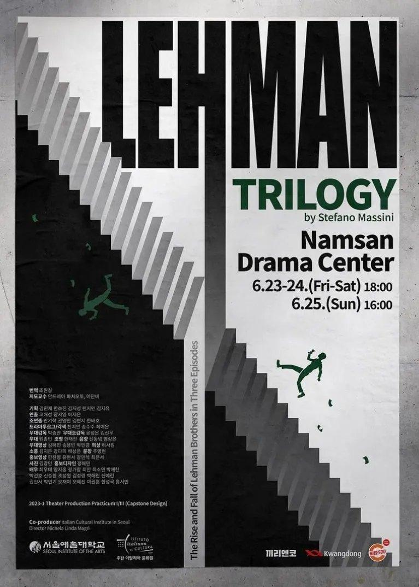
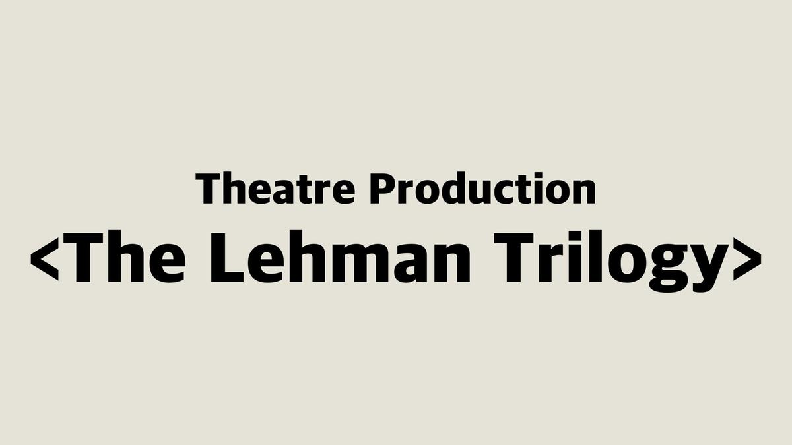
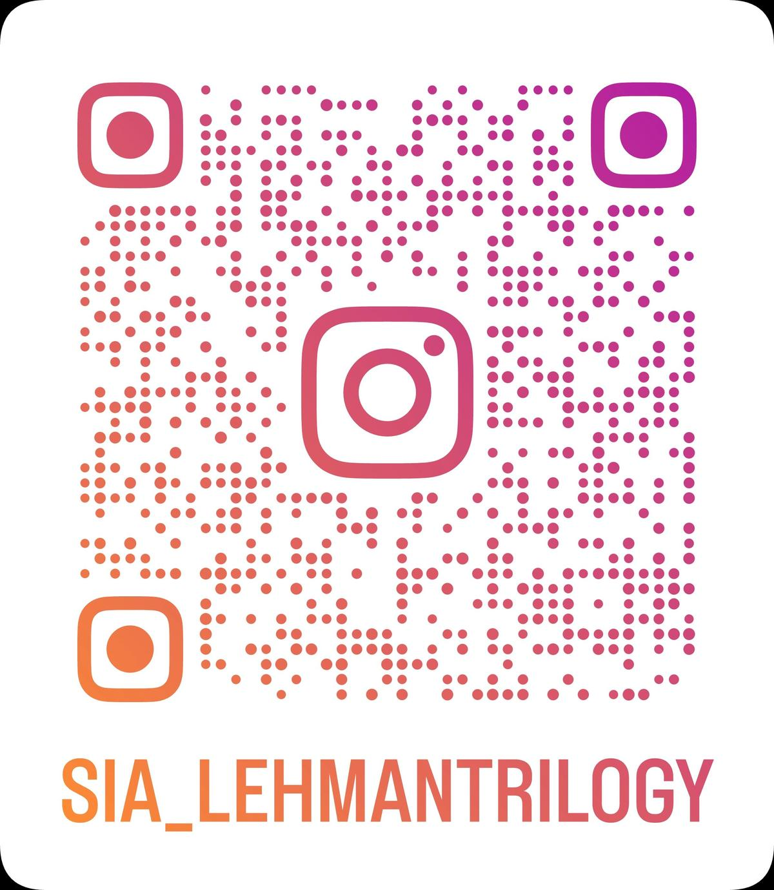

Theatre Production Workshop · 2023
Costume design visualising capitalism and generational transition through fabric, colour, and silhouette.

Background & Objective
This project was developed as part of the Theatre Production Workshop at the Seoul Institute of the Arts.
Inspired by The Lehman Trilogy, I explored how costume design could visualise the themes of capitalism and generational transition through fabric, colour, and silhouette.
Through this process, I deepened my understanding of costume production and stage collaboration, integrating visual and narrative elements to strengthen the overall performance storytelling.
"A costume design project reinterpreting The Lehman Trilogy through the lens of capitalism and human ambition — exploring how visual language can shape audience perception."

Process
Concept & Design Direction
Collaborated with international artist Tom Lee to visualise the overall concept, atmosphere, and spatial layout of the performance. Explored how physical structures, live video, and projection mapping could interact within the stage space — analysing the visual rhythm and emotional tone of the play to define the costume direction.
Workshop — Learning the Craft
In the costume workshop, explored the fundamentals of fabric cutting, pattern drafting, and machine stitching — focusing on how different materials respond to movement and light. This stage built the technical foundation for how craftsmanship supports the visual and functional goals of costume design.
Sewing practice and fabric test samples
Designing through Fabric
Developed costume sketches reflecting each character's personality, narrative tone, and historical context. Each design explored silhouette and texture as a visual language to express transformation across the acts.
Costume sketches reflecting the characters' transition and historical tone
Rehearsal Fittings
During rehearsal fittings, adjusted costumes for comfort, mobility, and visual harmony on stage. Feedback from the director and cast guided refinements in construction and detailing. Worked closely with performers to ensure each costume was comfortable, functional, and visually aligned with their movements.
Rehearsal fitting and costume adjustment photos
Technical Rehearsal & Performance Setup
During the technical rehearsal week, refined costume details in response to lighting and stage conditions — ensuring colour, texture, and materials behaved consistently under various lighting cues. Prepared identical costume presets for each performer before dress rehearsal, and coordinated the quick-change chart across four consecutive performances.
Quick-change preparation and backstage setup
Documentation
Rehearsal Reports
Worked closely with performers during rehearsal to ensure costumes were comfortable, functional, and visually aligned with their movements. Feedback from the director and professors was promptly reflected in the design — allowing for efficient preparation ahead of the final performance.
Rehearsal report
3 Jun 2023
Rehearsal report
detail
Production Meeting Logs
During production meetings, discussed how lighting and costume colours would interact on stage and shared feedback with the lighting and directing teams. These meetings helped identify and prevent potential stage accidents related to costume movement, while improving costume quality through regular review.
Meeting log
18 May 2023
Meeting log
detail
Result
Achievements & Reflections
Within four months, I prepared costumes for 19 performers — developing my own design perspective through script analysis and collaborative production. I learned sewing and sketching techniques under tight deadlines, and gained a deep appreciation for teamwork and communication in theatre production. Working with director Tom Lee introduced me to the intersection of live performance, projection mapping, and visual design — a perspective I carry into every production since.
